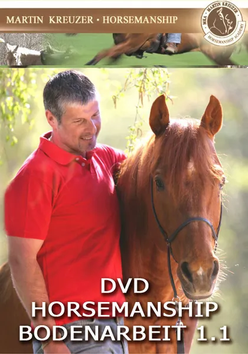
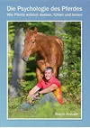

Lehr DVD Pferdetraining / Problempferde / Horsemanship
Produktprofil · Marktplatz-Daten 2026-10-14 · Verkaufsseiten-Recherche 2026-10-14 · Kategorien: Animals & Pets
- Lehr DVD Pferdetraining / Problempferde / Horsemanship ist ein/e Physisches Produkt in Animals & Pets, vertrieben über den Digistore24-Marktplatz von Anbieter Linnon, gelistet seit 2015-06-29.
- Listenpreis $38.50 (single payment) — Checkout, Auslieferung und Rückerstattungen laufen über Digistore24 selbst, nicht über den Anbieter.
- Käuferschutz: keine standardisierte Garantie-Formulierung gefunden — Rückerstattungsbedingungen vor der Zahlung auf der offiziellen Seite prüfen.
Interesse an Lehr DVD Pferdetraining / Problempferde / Horsemanship? Aktueller Preis, Boni und Garantiebedingungen finden Sie auf der offiziellen Seite des Anbieters:
Offizielle Verkaufsseite ansehen
Affiliate-Link (Werbung) — wir verdienen ggf. eine Provision, ohne Mehrkosten für Sie.

Marktplatz-Daten
| Produkttyp | Physisches Produkt |
|---|---|
| Preis | $38.50 (Single payment) |
| Garantie/Rückgabe | Laut Verkaufsseite des Anbieters — vor dem Kauf auf der offiziellen Seite prüfen |
| Anbieter | Linnon (gelistet seit 2015-06-29) |
Marktplatz-Beschreibung des Anbieters
Pferde/Pferdetraining/Problempferde/Horsemanship DVD HORSEMANSHIP - BODENARBEIT 1.1 Die DVD Reihe gibt Anleitungen, die sofort umsetzbar die notwendigen Übungselemente zeigen und gleichzeitig deren Zweck verständlich erklären. Ideal für den ambitionierten Freizeitreiter. Dauer: ca. 108 min. Genau diese Übungselemente setzen wir täglich in unserem Pferdetraining ein, um unzureichend trainierte Pferde auszubilden oder Probleme jeglicher Art zu lösen. Martin Kreuzer Martin Kreuzer zeigt auf dieser DVD, wie mit der korrekten Bodenarbeit der Grundstock für die Beziehung zum Pferd gelegt wird. Respekt, Kontrolle und Sicherheit stehen dabei an erster Stelle. Die richtige Kommunikation mit dem Pferd unterliegt den Naturgesetzen und die Trainings- und Ausbildungsmethode von Martin Kreuzer beschäftigt sich ausschließlich mit dieser. Vertrauen durch Verstehen steht im Mittelpunkt des Ausbildungsprogramms. Schritt für Schritt erklärt Martin Kreuzer, wie das Vertrauen des Pferdes erlangt werden kann. Lieber Affiliate, ich freue mich auf eine gute Zusammenarbeit! Martin Kreuzer Mehr über uns erfährst du hier Seit vielen Jahren inspiriert und begeistert Martin Kreuzers Philosophie des „Modernen Pferdetrainings“ viele Pferdebesitzer im gesamten deutschsprachigen Raum. Mit seinem umfassenden Hintergrundwissen über die Natur der Pferde und deren Lernpsychologie, ist es ihm gelungen, sein modernes Pferdetraining als solides und ansprechendes Handwerk über die Grenzen Deutschlands hinaus bekannt zu machen. In der eigens dafür gegründeten MKA Horsemanship Academy haben seither viele hunderte Pferdebesitzer fasziniert und begeistert die Ausbildung für eine bessere Pferd-Mensch-Beziehung erfahren.
Von der Verkaufsseite des Anbieters
Seitentitel: Lehr-DVDs von Martin Kreuzer - Respektvolles Pferdetraining & Pferdezubehör
Meta-Beschreibung: Aus Liebe zum Pferd. Respektvolles Pferdetraining nach der Natur des Pferdes. Reitzubehör, Knotenhalfter und Pferdebedarf für den Reitsport. Korrekte Bodenarbeit im Horsemaship Pferdetraining mit Martin Kreuzer.
Abschnitts-Überschriften
- Lehr-DVDs von Martin Kreuzer
- Set mit 3 DVDs HORSEMANSHIP–BODENARBEIT mit Martin Kreuzer
Einstiegstext
Nutze das Wissen und die Erfahrung von Martin Kreuzer, um die Beziehung zu Deinem Pferd weiter zu vertiefen, Herausforderungen zu meistern und präventiv zu arbeiten im täglichen Umgang und in der Ausbildung Deines Pferdes. Alle notwendigen Hintergrund-Informationen über das Lernverhalten der Pferde und die Vorgehensweise des Pferdebesitzers werden gleich zu Beginn ausführlich dargestellt.
„Gehe mit mir diesen Weg und ich führe Dich Schritt für Schritt zum gewünschten Erfolg.“ Dein Martin Kreuzer
Die DVD Reihe für den ambitionierten Freizeitreiter gibt Anleitungen, die sofort umsetzbar die notwendigen Übungselemente zeigen und gleichzeitig deren Zweck verständlich erklären.
Vertrauen durch Verstehen steht im Mittelpunkt des Ausbildungsprogramms. Schritt für Schritt erklärt Martin Kreuzer, wie das Vertrauen des Pferdes erlangt werden kann.
Fragen, die die Verkaufsseite beantwortet
- meine Produkte bewerben und dabei verdienen?
Preisangaben auf der Seite: €40,95
CTA-Buttons: „Startseite" · „Download-Webinar von Martin Kreuzer:"
Recherche-Methode: rohes HTML · 1379 Wörter · Qualität: rich · recherchiert am 2026-10-14. Vollständige Recherche-Datei (MD) ↗
Wie Produkte dieser Art geliefert werden
Allgemeiner Hinweis zu diesem Produkttyp (keine anbieterspezifische Anleitung): Physische Produkte werden an Ihre Adresse versandt; Versandkosten und -zeiten erscheinen im Checkout. Für die genaue Anwendung von Lehr DVD Pferdetraining / Problempferde / Horsemanship sind die offizielle Verkaufsseite und die enthaltenen Materialien maßgeblich.
Gut zu wissen
- Keine Garantie-Formulierung in unserer Recherche gefunden — bestätigen Sie das Rückgabefenster auf der offiziellen Seite, bevor Sie kaufen.
Was ist Lehr DVD Pferdetraining / Problempferde / Horsemanship?
Lehr DVD Pferdetraining / Problempferde / Horsemanship ist ein/e physisches produkt in der Kategorie Tiere & Haustiere des Digistore24-Marktplatzes, veröffentlicht von Anbieter Linnon und im Verkauf seit 2015-06-29. Der Anbieter beschreibt es so: "Pferde/Pferdetraining/Problempferde/Horsemanship DVD HORSEMANSHIP - BODENARBEIT 1.1 Die DVD Reihe gibt Anleitungen, die sofort umsetzbar die notwendigen Übungselemente zeigen und gleichzeitig deren Zweck verständlich erklären. Ideal für den ambitionierten Frei" (Marktplatz-Beschreibung des Anbieters, leicht gekürzt).
Lehr DVD Pferdetraining / Problempferde / Horsemanship Preis: was Sie zahlen
Der Marktplatz listet Lehr DVD Pferdetraining / Problempferde / Horsemanship zum $38.50 Preis (single payment). Digistore24 fügt im Checkout die gesetzliche Steuer Ihres Landes hinzu — dort sehen Sie den Endbetrag vor der Zahlung. Die Verkaufsseite selbst nennt: €40,95 (Anbieteraussagen — verbindlich ist der Checkout-Betrag). Eine separate Plattformgebühr gibt es nicht; Anbieter können eigene Upsells nach dem Checkout anbieten.
Lehr DVD Pferdetraining / Problempferde / Horsemanship Rückerstattung und Geld-zurück-Garantie
Wir haben keine standardisierte Garantie-Formulierung auf der Verkaufsseite gefunden. Rückerstattungen für Digistore24-Käufe laufen über die Plattform: Antrag über den Support-Link in Ihrer Bestell-E-Mail, innerhalb des Garantiezeitfensters, das im Checkout angezeigt wird. Praktischer Rat: Entscheiden Sie innerhalb des Fensters — wenn das Produkt unter den Erwartungen bleibt, erstatten lassen statt irren lassen.
Mechanik im Detail: So funktionieren Digistore24-Rückerstattungen.
Für wen ist Lehr DVD Pferdetraining / Problempferde / Horsemanship geeignet?
Basierend auf der Tiere & Haustiere-Einordnung und der single payment-Abrechnung richtet sich Lehr DVD Pferdetraining / Problempferde / Horsemanship an Käufer, die tiere & haustiere-Lösungen suchen im mittleren Preisbereich. Der ehrliche Test ist nicht die Kategorie, sondern Ihre eigene Situation: Werden Sie es realistisch innerhalb des Garantiefensters nutzen? Wenn ja, ist der Preis eine Investition; wenn nein, ist er Ballast — unabhängig von der Qualität.
Ist Lehr DVD Pferdetraining / Problempferde / Horsemanship seriös? Was Sie vor dem Kauf prüfen
Wir bewerten keine Seriosität — das kann niemand, ohne das Produkt zu nutzen. Prüfbare Punkte, alle auf dieser Seite: die Marktplatz-Historie des Anbieters (im Verkauf seit 2015-06-29), die wörtlichen Verkaufsseiten-Auszüge unten (gekennzeichnet als Anbieteraussagen — deren Werbung, nicht unsere Empfehlung), die Garantiebedingungen im Checkout und die Auslieferungsart. Vorsichtsignale bei jedem Angebot: Countdown-Dringlichkeit gepaart mit vagen Rückerstattungsbedingungen, Testimonials ohne Datum und Anbieterseiten, die den Preis bis zum Checkout verstecken.
Wie kommen Sie nach dem Kauf an Lehr DVD Pferdetraining / Problempferde / Horsemanship?
Der Checkout läuft über Digistore24. Nach der Zahlung: Physische Produkte werden an Ihre Adresse versandt; Versandkosten und -zeiten erscheinen im Checkout. Bewahren Sie die Bestell-E-Mail auf — sie ist Ihr Schlüssel zum/d zur physisches produkt, zu Rückerstattungsanträgen und zum Digistore24-Käufersupport.
Lehr DVD Pferdetraining / Problempferde / Horsemanship Erfahrungen: so recherchieren Sie richtig
Die meisten „Erfahrungsberichte" zu Marktplatz-Produkten sind Affiliate-Inhalte — einschließlich Seiten wie dieser, die an Käufen mitverdienen. Behandeln Sie jeden Bericht (auch unseren) als Ausgangspunkt und prüfen Sie gegen Primärquellen: die Verkaufsseite des Anbieters, die Digistore24-Rückerstattungsrichtlinie und — für tiere & haustiere — unabhängige Communities außerhalb des Affiliate-Ökosystems. Auf dieser Seite sind die Verkaufsseiten-Auszüge unten wörtlich zitiert, damit Sie die Aussagen des Anbieters bewerten können, ohne wegzuklicken.
Wie Sie Lehr DVD Pferdetraining / Problempferde / Horsemanship sicher kaufen
- Öffnen Sie die offizielle Verkaufsseite und lesen Sie das vollständige Angebot.
- Bestätigen Sie Endpreis und Garantiezeitfenster auf der Digistore24-Kassenseite — sie ist bindend, kein Vergleichsportal.
- Zahlen Sie innerhalb des Digistore24-Checkouts (niemals per Überweisung oder Off-Platform-Links).
- Speichern Sie die Bestellbestätigung; notieren Sie die Rückerstattungsfrist im Kalender.
- Prüfen Sie zügig. Der Digistore24-Käufersupport hilft, wenn der Anbieter nicht reagiert.
Vollständiges Recherche-Archiv für dieses Produkt (Markdown: kompletter Marktplatz-Datensatz + wörtliche Verkaufsseiten-Auszüge): Lehr DVD Pferdetraining / Problempferde / Horsemanship — vollständiges Datenarchiv (Markdown-Datei: 7997-lehr-dvd-pferdetraining-problempferde-horsemanship.md).
- Listenpreis & Abrechnung — Quelle: offizielle Digistore24-Marktplatz-API, Stand 2026-10-14. Maßgeblich für den aktuellen Preis ist immer die Kassenseite.
- Verkaufsseiten-Zitate — Quelle: https://www.martinkreuzer.com/produkte/lehr-dvds/, abgerufen 2026-10-14 (Methode: rohes HTML). Verify: offizielle Seite öffnen.
- Garantie / Rückgabe — vom Anbieter festgelegt; vor dem Kauf auf der Verkaufsseite bestätigen.
- Nicht von uns geprüft: Produktqualität, Ergebnisse, Testimonials — kein Praxistest für dieses Listing durchgeführt.
Häufige Fragen zu Lehr DVD Pferdetraining / Problempferde / Horsemanship
Antworten aus dem Marktplatz-Snapshot (2026-10-14) und der Verkaufsseiten-Recherche (2026-10-14); Anbieteraussagen sind inline gekennzeichnet.
Was ist Lehr DVD Pferdetraining / Problempferde / Horsemanship?
Lehr DVD Pferdetraining / Problempferde / Horsemanship ist ein Angebot des Typs „Physisches Produkt" im Digistore24-Marktplatz, Anbieter: Linnon, gelistet seit 2015-06-29. Eingepflegt unter Tiere & Haustiere. Digistore24 wickelt Checkout, Lieferung und Rückgaben ab.
Wie viel kostet Lehr DVD Pferdetraining / Problempferde / Horsemanship?
Der Digistore24-Marktplatz listet es für $38.50 (single payment). Preise legt der Anbieter fest und können sich ändern — der Marktplatz-Eintrag oben zeigt den Schnappschuss; die offizielle Verkaufsseite zeigt den aktuellen Preis.
Gibt es eine Geld-zurück-Garantie für Lehr DVD Pferdetraining / Problempferde / Horsemanship?
Unsere Verkaufsseiten-Recherche hat keine explizite Garantie-Formulierung gefunden. Viele Digistore24-Produkte bieten 60 Tage Geld-zurück, aber das legt jeder Anbieter selbst fest — bestätigen Sie es auf der offiziellen Verkaufsseite, bevor Sie kaufen.
Ist Lehr DVD Pferdetraining / Problempferde / Horsemanship seriös?
Wir bewerten keine Seriosität — wir veröffentlichen überprüfbare Zahlen: Anbieter Linnon (gelistet seit 2015-06-29), mit der vollständigen Verkaufsseiten-Recherche archiviert auf dieser Seite (Anbieteraussagen als solche gekennzeichnet). Lesen Sie unsere 6-Punkte-Bewertungsmethode und entscheiden Sie anhand der Zahlen — oder diskutieren Sie Lehr DVD Pferdetraining / Problempferde / Horsemanship auf GitHub.
Wo kann ich Lehr DVD Pferdetraining / Problempferde / Horsemanship sicher kaufen?
Nur über die offizielle Verkaufsseite, die auf dieser Seite verlinkt ist (Checkout und Rückgaben laufen über Digistore24). Prüfen Sie dort Preis und Garantie vor der Bestellung. Der Link ist ein Affiliate-Link — der Kauf unterstützt diese Website ohne Mehrkosten für Sie.
Wie erhalte ich Lehr DVD Pferdetraining / Problempferde / Horsemanship nach der Zahlung?
Der Checkout läuft über Digistore24: Nach der Zahlung erhalten Sie Ihren Zugang oder Download per E-Mail und in Ihrem Digistore24-Kundenkonto. Lieferdetails für diesen Produkttyp: Physische Produkte werden an Ihre Adresse versandt; Versandkosten und -zeiten erscheinen im Checkout. Bei Problemen kann der Digistore24-Käufersupport Ihre Bestellung wiederherstellen.
Alle 50 Käuferfragen zu Tiere & Haustiere — das komplette Kategorie-FAQ.
Lehr DVD Pferdetraining / Problempferde / Horsemanship auf Reddit diskutieren
In Community-Threads vergleichen echte Käufer Erfahrungen. Wir verlinken Communities, keine einzelnen Posts — Threads verschwinden, Subreddits bleiben:
- Reddit-Suche nach „Lehr DVD Pferdetraining / Problempferde / Horsemanship" — Live-Ergebnisse, von uns nicht beeinflusst.
- Top-„Erfahrungs"-Treffer dieses Jahr — selbst nach Aktualität filtern.
Passendes auf Amazon.de
Physische Produkte und Zubehör, die häufig zusammen mit Lehr DVD Pferdetraining / Problempferde / Horsemanship gekauft werden:
- Haustierbedarf auf Amazon.de — Top-Ergebnisse, Amazon-Ranking.
- Bestseller: Haustierbedarf — live Liste von Amazon, von uns nicht kuratiert.
Werbung: Als Amazon-Partner verdient DigistorePicks DE an qualifizierten Käufen (Partner-tag adminstorede-21). Amazon setzt eigene Preise und Provisionen (niedrige einstellige Prozente — weit unter den 30–75% der Digistore24-Anbieter). Amazon ist ein Convenience-Angebot für Sachprodukte, kein Ersatz für das digitale Produkt oben.
Ähnliche Angebote in Tiere & Haustiere

BAUCH, BEINE, PO – das Trainingsprogramm für dein Freizeitpferd In nur 8 Wochen Muskulatur, Balance & Tragkraft aufbauen, für ein gesundes, motiviertes Pfer

Zertifizierter Katzenverhaltensberater / Katzencoach – Fernlehrgang der aCATemy® Bewirb eine professionelle Online-Ausbildung für alle, die Katzenverhalten fund

Diese Schulung ist hilft Haltern von Herdenschutzhunde in Familienhand, ein glückliches und harmonischen Zusammenleben zu ermöglichen. Empfehlen Sie das einziga

So wird aus Lesen echte Hilfe vor Ort! Im Guide erfahren Sie: Warum Tierschutz heute wichtiger ist den je Was wirklich im Tierschutzalltag so passiert Die 5 grö
Weitere Angebote von Linnon
Bequem von zu Hause aus lernen - unsere Online-Webinare machen es möglich! Inhalt des Webinars: Was will mein Pferd mir sagen ? Schon immer wünscht sich der Men

Ratgeber von Martin Kreuzer Gebundenes Buch: 78 Seiten Die Psychologie des Pferdes Wie Pferde wirklich denken, fühlen und lernen Martin Kreuzer, Gründer der MKA
E-Book von Martin Keuzer Pferdetrainer und Gründer der MKA Horsemanship Academy Horsemanship Gefühl, Zeitgefühl & Gleichgewicht Dieses E-Book zeigt allen Re
Ähnliche Preislage in Tiere & Haustiere

Basis-Webinar: Grundlagen in der Hundeerziehung Wenn Du nur möchtest, dass Dein Hund kommt, wenn Du ihn rufst, hört sich das zwar ganz einfach an, ist aber eige

Lange habe ich auf dieses Webinar gewartet. Wenn die Welpenbesitzer zu mir in die Hundeschule kommen, kennt man sich noch nicht so gut und dann gute Videos zu e

Die „Soforthilfe für sensible Tiere“ ist für Tierhalterinnen, deren Tier bei Lärm, Gewitter, Tierarztbesuchen, Besuch oder Veränderungen in Stress oder Panik ge

Die 100 wichtigsten Vitalstoffe für Hunde – Dein Schlüssel zu einem gesunden und glücklichen Hund! Beschreibung: Du möchtest, dass dein Hund gesund, vital und v
Ähnliche Suchanfragen
Wo Sie es sich ansehen können
Wo Sie es sich ansehen können
Aktuelle Preise, Garantie und Boni finden Sie auf der offiziellen Verkaufsseite:
Offizielle Verkaufsseite ansehen
Das ist ein Affiliate-Link (Werbung) — kaufen Sie darüber, verdienen wir ggf. eine Provision, ohne Mehrkosten für Sie.
Quellen & weiterführende Informationen
- Offizielle Verkaufsseite (aktueller Preis, Garantie, Boni): www.martinkreuzer.com/produkte/lehr-dvds/ (Affiliate-Link)
- Öffentliche Digistore24-Produktseite: checkout-ds24.com/product/53165
- Vollständige Recherche-Datei (Markdown, versioniert): content/products/7997-lehr-dvd-pferdetraining-problempferde-horsemanship.md
- Affiliate-Supportseite des Anbieters: www.martinkreuzer.com/produkte/mka-partner-werden/
- Marktplatz-Kategorie: Tiere & Haustiere
Wie wir Produkte wie Lehr DVD Pferdetraining / Problempferde / Horsemanship bewerten
Sechs Prüfungen, ausschließlich mit offiziellen Marktplatz-Zahlen. Die vollständige Bewertungsmethode lesen · unsere Recherche-Standards & Kennzeichnung.
Fragen oder eigene Erfahrungen mit Lehr DVD Pferdetraining / Problempferde / Horsemanship?
Praxis-Tests veröffentlichen wir erst, nachdem wir ein Produkt selbst gekauft haben — aber Ihre Erfahrung hilft anderen Lesern: Diskussion zu Lehr DVD Pferdetraining / Problempferde / Horsemanship auf GitHub starten/verfolgen. Falsche Zahl gefunden? Korrektur melden — jede Seite zeigt ihre Datenstände, Korrekturen gelten für die ganze Website.